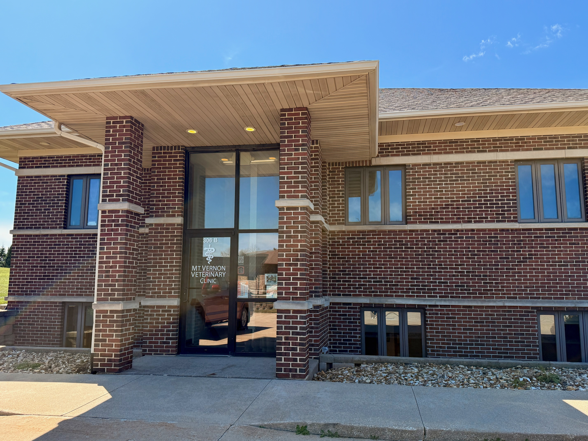

Mount Vernon Veterinary Clinic

Our mission
Our mission is to provide compassionate, high-quality veterinary care for pets and farm animals while building lasting relationships with the people who care for them. As a locally focused mixed animal practice, we are committed to excellent communication, personalized service, and trust-based partnerships with our clients. We strive to treat every animal with kindness and respect, support every client with understanding and transparency, and deliver thoughtful, individualized care that promotes the health and well-being of animals.